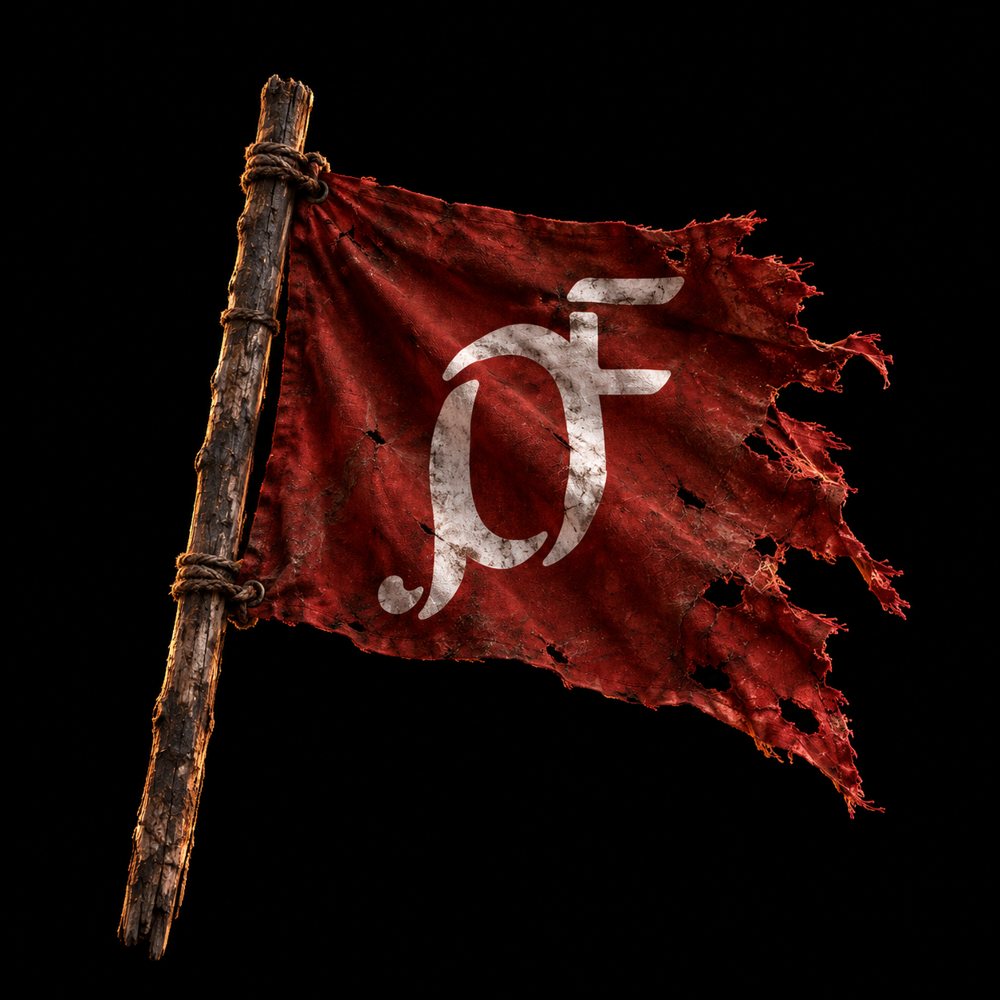
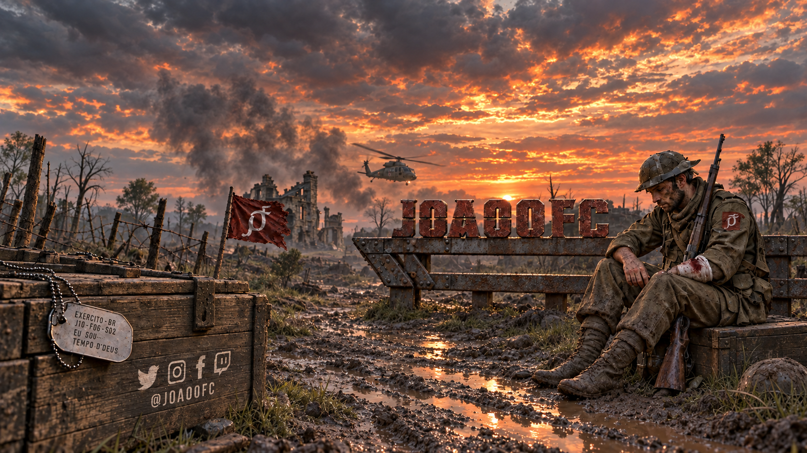

Agenda de lives
Nenhum horário fixo anunciado por aqui. Acompanhe os avisos nas redes.
Transmissões no YouTube ↗
JOA00FCFPS MOBILE
GAMEPLAYS · LIVES · COMUNIDADE
FPS na palma da mão. Acompanhe as partidas, descubra novas experiências e jogue junto.
01 / QUEM ESTÁ NO CONTROLE
Meu canal começou com uma paixão pelo Warzone Mobile. Hoje, o espaço é para quem curte FPS mobile: partidas, desafios e descobertas, sempre com vontade de conhecer o próximo jogo.
Aqui eu reúno meus conteúdos, minhas redes e a comunidade. Seja para assistir a uma gameplay, encontrar gente para jogar ou conversar sobre novos títulos, seja bem-vindo.
Conheça o canal ↗02 / ESCOLHA O QUE ASSISTIR
Partidas e experiências do canal, reunidas na aba de vídeos.
Explorar vídeos ↗02 — SHORTSConteúdos curtos para acompanhar entre uma partida e outra.
Ver Shorts ↗03 — TWITCHAcompanhe o perfil na Twitch para saber quando houver transmissão.
Abrir Twitch ↗Warzone Mobile, Apex Legends Mobile e Battlefield Mobile fazem parte do histórico de conteúdo do canal. A menção não indica disponibilidade atual dos jogos.
03 / CENTRAL DO JOGADOR
Nenhum horário fixo anunciado por aqui. Acompanhe os avisos nas redes.
Transmissões no YouTube ↗Os primeiros arquivos e guias serão disponibilizados aqui quando estiverem prontos.
Em preparaçãoPara acompanhar as publicações do João sobre jogos e o canal.
Acompanhar no X ↗A lista de equipamentos e acessórios será publicada após a confirmação dos modelos em uso.
Em preparação04 / ENCONTRE SEU ESQUADRÃO
Vídeos, bastidores e conversa sobre FPS mobile. Escolha sua rede e acompanhe.
05 / VAMOS CRIAR JUNTOS
Sou criador de conteúdo com foco em FPS mobile e tenho interesse em participar de testes de novos títulos, incluindo projetos AAA. Estou aberto a conversar sobre acesso a betas, gameplays, feedback de jogador e parcerias alinhadas ao público do JOA00FC.
Conversar sobre uma parceria ↗joaok8530@gmail.com
06 / APOIE O CANAL
Se você curte o conteúdo e deseja contribuir, pode apoiar o JOA00FC em Bitcoin. Assistir, comentar e compartilhar também faz a diferença.
O apoio é voluntário. Obrigado por fazer parte da comunidade!
Selecione o endereço acima para copiar. Confira o endereço e a rede antes de enviar.
Abrir na carteira Bitcoin ↗O botão funciona quando há uma carteira compatível instalada.